準備で飛び方が変わる
パン粉と揚げ加減で燃料が、ソースで上昇スピードが決まります。どこで差をつけるかはあなたしだい。
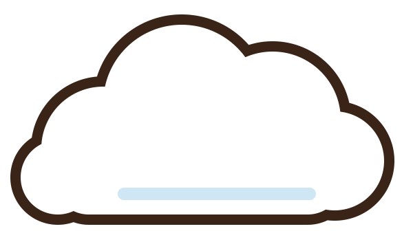
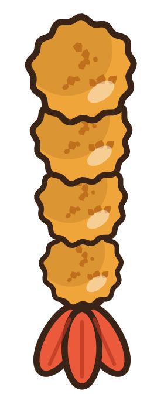
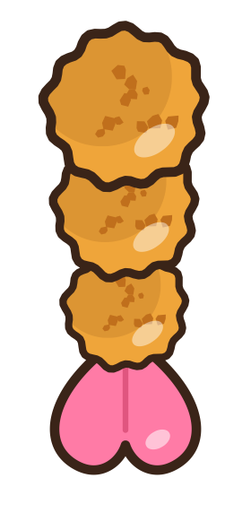
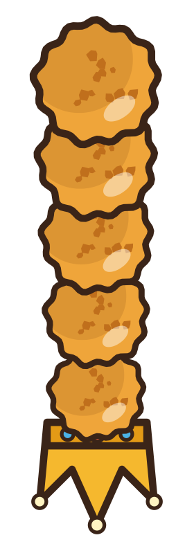
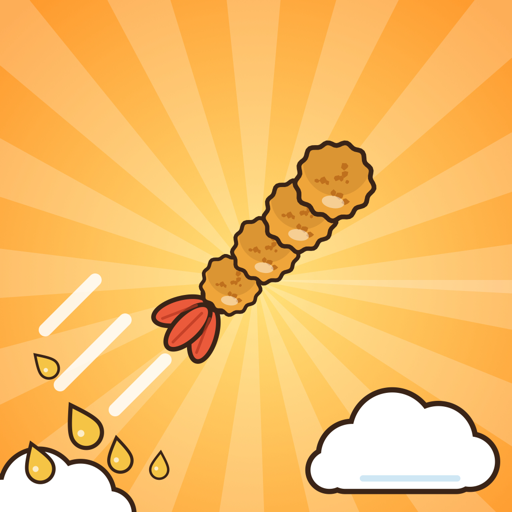
とべ！
今日はどんなエビフライにしようかな…？？
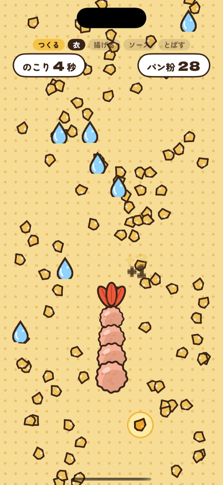
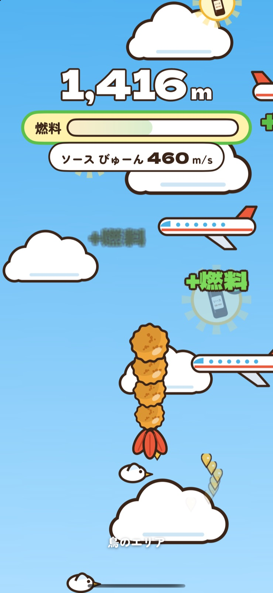
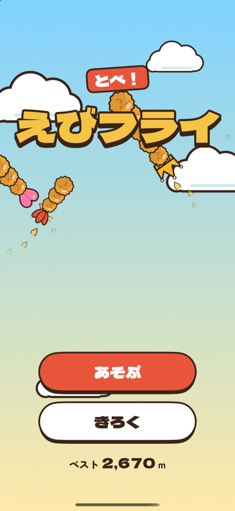
HOW TO PLAY
準備のできばえが、そのまま飛び方に変わります。1回は1分ほどで、何度でも挑戦できます。
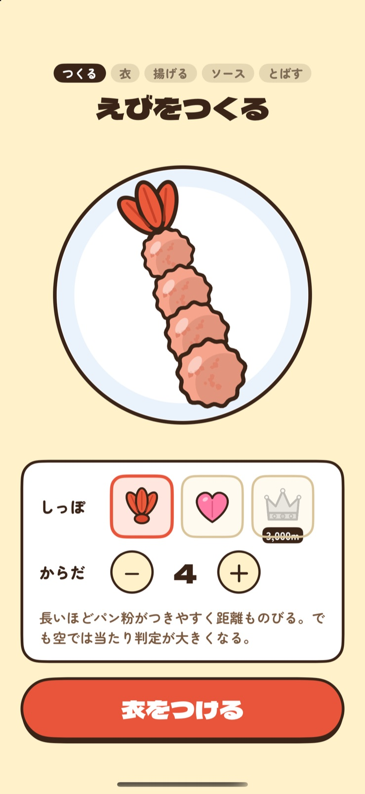
しっぽの形とからだの長さを選んで、自分だけのエビに。
降ってくるパン粉をキャッチ。金のパン粉は3こぶん、水てきには気をつけて。
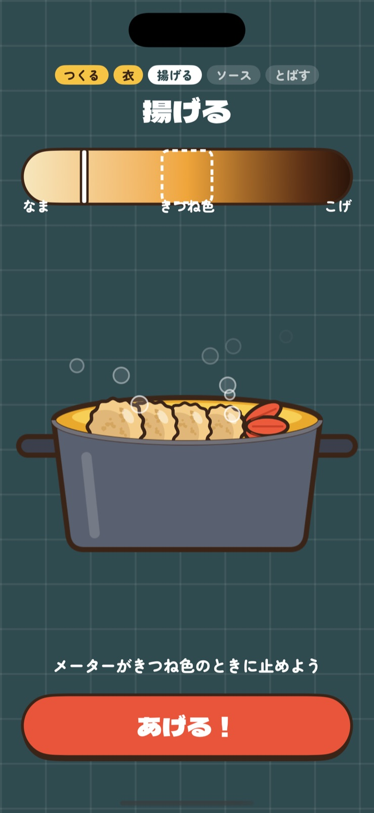
メーターをタイミングよく止めて、きつね色をねらおう。
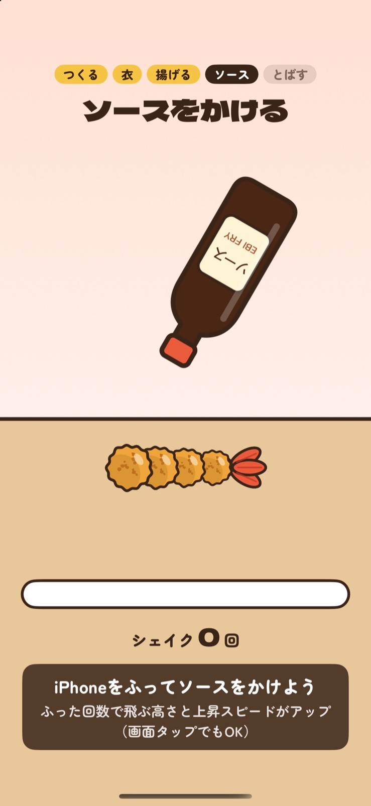
iPhoneをふってソースをかける。たくさんふるほど速く上昇！
かたむけて障害物をよける。ソースのボトルで燃料ほきゅう。
SKY ZONES
高度が上がると、出てくる障害物も変わります。ぶつかったらそこまで。燃料がなくなるまで、どこまで行けるかな？
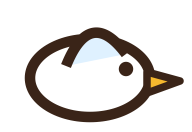
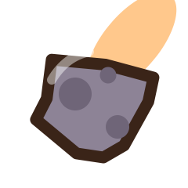
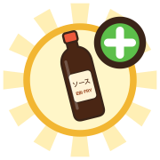
FEATURES
パン粉と揚げ加減で燃料が、ソースで上昇スピードが決まります。どこで差をつけるかはあなたしだい。
記録をのばすと称号が上がり、3,000mをこえると特別な「おうかんのしっぽ」が使えます。
飛距離はGame Centerのランキングに記録。友だちやみんなと、どこまで飛べるかをきそえます。
SCREENS
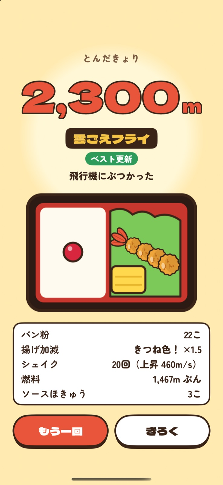
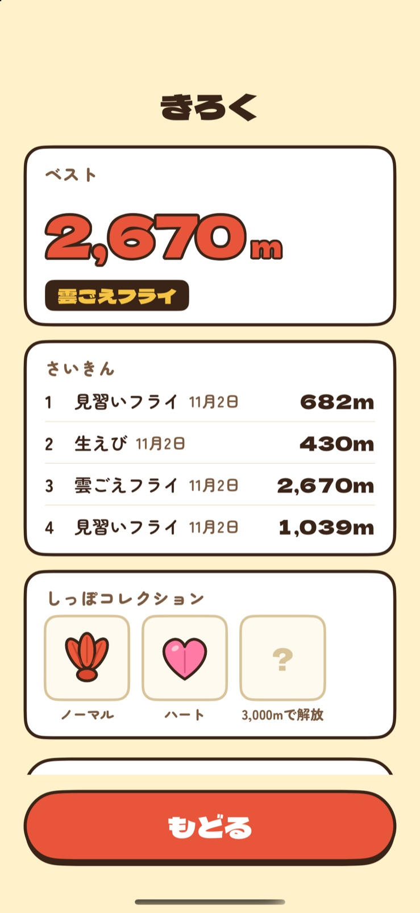
衣をつけて、揚げて、空のかなたへ。無料で遊べます。
ご意見・ご要望、不具合のご報告を受け付けています。
TwitterのDMで問い合わせる本アプリは広告の表示に Google AdMob を、ランキングに Apple の Game Center を利用しています。iPhoneのふる・かたむける動きは操作のためだけに端末の中で使い、外部に送信することはありません。詳しくはプライバシーポリシーをご覧ください。
プライバシーポリシーを読む